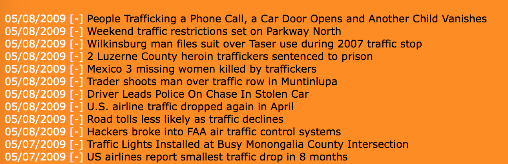
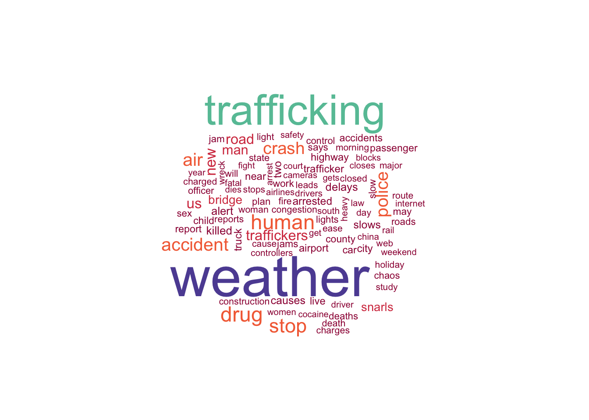
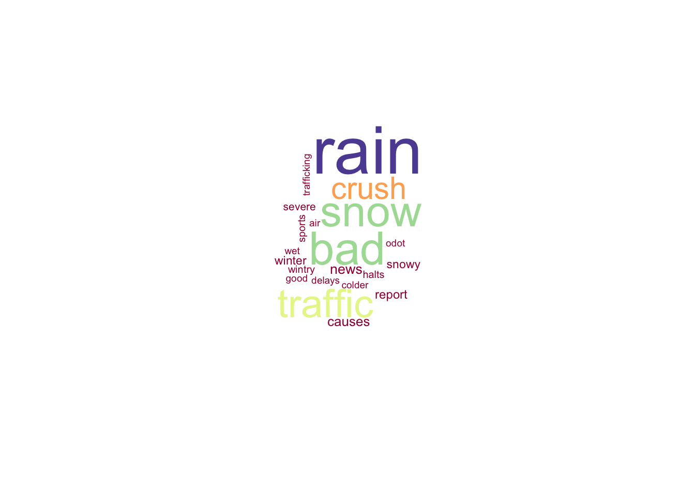

We started from text analysis. Firstly, we wanted to test whether precipitation was closely related with accident. Our group collected some news from a website http://www.infopig.com. As you can see from the screenshot of the website, there are many news headlines about traffic on a daily basis. There were many aspects included in the news, like traffic accident and crimes. We got access to the traffic history database through web crawler. Over 40 thousand pieces of news from 2006 to 2016 were stored in a csv file.

After processing the data, we drew a figure to show the top 10 words appearing in the news. The most frequent word is undoubtedly “traffic”. As we expect, word “weather” ranks the second with frenqucy of 7459, which indicates there exists some relationship between weather and accidents. Other top 10 frequent words include “trafficking”, “drug” and “police”. We can deduce that reporters were very interested in crimes and lots of crimes were still happening. However, in the wordcloud consisting of top 100 words, we did not see some words related with weather except the word “weather” itself, which encouraged us to explore more about the news with a focus on weather.

Our idea was to find words that often co-occur with word “weather”. Here we observe that “rain” is the most frequent word co-occuring with “weather”. Other words include “snow”, “snowy” and “winter”, which are also in the range of precipitation as explained in the introduction. Another word “bad” appears with frequency of 73. It is consistent with our guess that bad weather will lead to more accidents.

It seems there does exist a strong relationship between precipitation and accidents according to our text analysis. However, we need some future analysis. Here I want to talk about the weakness of text analysis.It is a purely descriptive method. It describes what is there, but may not reveal the underlying motives for the observed pattern (‘what’ but not ‘why’). For example, we know what words are closely related with accidents, but we do not the reason. At the same time, the analysis is limited by availability of material. Observed trends of the data on the website may not be an accurate reflection of reality. The news include events happening in the United States instead of specifically in New York. Therefore, the result might be biased.